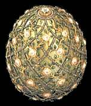 |
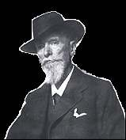
To the Imperial
and Royal houses
of Russia and Denmark
Peter Carl Fabergé (1846 - 1920) was born in St. Petersburg, Russia, son of the jeweler Gustav Fabergé. He was educated first in St. Petersburg and later in Dresden, as a jeweler and businessman. In the mid-1860 he began working for his father's firm in St. Petersburg. By 1866 Fabergé was active for the Imperial Cabinet, the body that oversaw the czar's treasure house and all new jewelry orders. Contrary to the popular belief, the Fabergés themselves did not make jewelry. They stood at the apex of a pyramid, overseeing a design studio and delegating production to a head work master. Final approval of the finished item, however, lay with Carl Fabergé himself. (Tip: point to the images with the mouse index for more information).
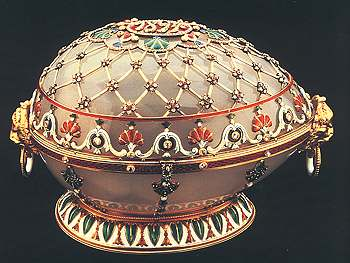 |
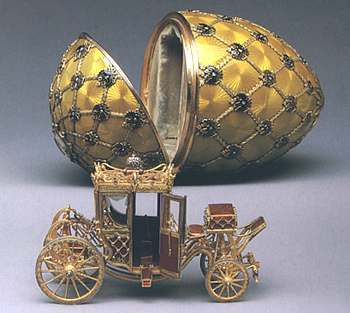 |
The year 1882 marked Fabergé's debut as a leading Russian jeweler. His display of object in the archeological-revivalist style at the Pan-Russian Exhibition in Moscow attracted the attention of the press, who hailed him as an innovator. The inspiration of many of Fabergé early creations came from Hermitage and its treasury of 18th century art objects collected or received by the czars.
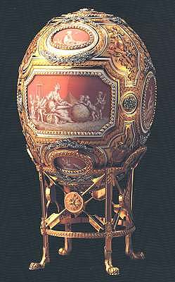 |
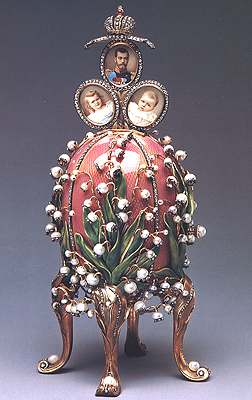 |
What differentiated Fabergé from all his contemporaries was his constant quest for novelty. For this reason he rapidly achieved recognition: a first gold medal for his 1882 exhibits; the title of Supplier to the Imperial Court (1885); gold medals for exhibits in Nuremberg (1885) and Copenhagen (1888); the Order of St. Stanislas 1st Class (1889); the title of Appraiser of the Imperial Cabinet (1890). Fabergé's fame was spread by his two chief patronesses, both daughters of King Christian IX of Denmark: Czarina (later Dowager Empress) Maria Feodorovna and her sister, Alexandra, princes of Wales (queen of England, 1901-1910, wife of Edward VII).
|
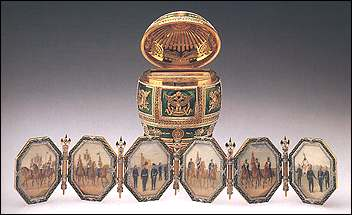 |
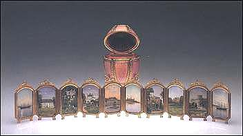 |
Fabergé's worldwide reputation is due chiefly to his incomparable series of imperial Easter Eggs, generally thought to have numbered fifty-six, produced from 1884 to 1916. Eleven of these eggs fall into the reign of Czar Alexander III, from 1884 until 1894, and all were presents from the czar to his wife.
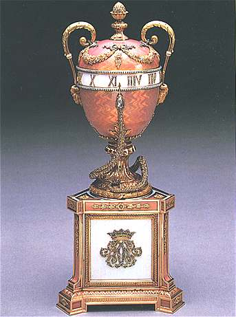 |
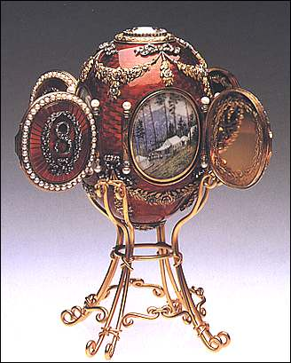 |
From 1895 onward Nicholas II continued the tradition, giving a further forty-four eggs to both his mother and his wife. Fabergé's first eggs were inspired by prototypes of the 18th century, but the early 1890s Fabergé creativity asserted itself.
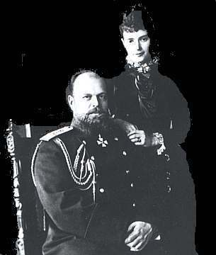 |
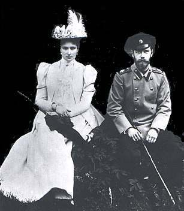 |
| Czar Alexander III and Czarina Maria Feodorovna. Ca. 1890. | The future Czar Nicholas II and his fiancée, Princess Alix of Hessen-Darmstadt, the future czarina, 1894 |
Source: Fabergé in America, by Géza von Habsburg, Thames and Hudson, Fine Arts Museum of San Francisco, ISBN 0-88401-087-2.
Biographical note: Princess Dagmar, later Czarina Maria Feodorovna, was daughter (the fourth child) of King Christian IX of Denmark, The Czar Alexander III died 1st November 1894, at the age of 49. The Czarina Maria Feodorovna stayed in Russia until 1918, when she was evacuated to Denmark, after the murdering in Yekaterinburg, in which her son (Czar Nicholas II) and his family were assassinated by the order of the Soviet government.
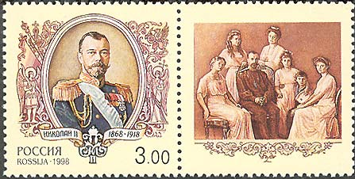
The Russian Postal Administration has commemorated in 1998 the memory of the defunct tsar, this 80 years after his assasination. The stamp shows his portrait, and on the label one can see the tsar and his murdered family.
Links: